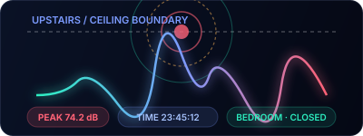
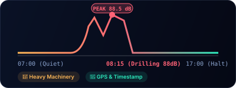

Record construction noise stages with context, not just a single number.
Capture start, peak, and quiet-after periods during renovation or construction work, with media evidence and structured report exports.

Site snapshots
Take acoustic evidence photos with live dB, time, GPS, place, calibration context, and device details.

Peak periods
Mark manual events and capture short video clips during drilling, hammering, demolition, or heavy equipment activity.

Reports
Export PDF/CSV records for site coordination, resident communication, or internal project follow-up.

Four steps for a defensible record
- Record before work begins.
- Record the loudest phase with photo or video.
- Record after work stops for comparison.
- Export PDF and save original media files.
Permit & compliance boundary
SOUNDTEST.PRO is designed for contractor coordination, community dialogue, and preliminary logs. Statutory permit enforcement requires calibrated Class 1 / Class 2 meters and verified procedures.
Frequently asked questions
What hours is construction noise allowed in residential areas?
Most cities permit noisy construction between roughly 7 or 8 AM and 6 or 7 PM on weekdays, with quieter hours on weekends and no work on holidays. These windows vary widely by municipality, county, and lease. Check your local code before assuming a site is breaking rules. SOUNDTEST.PRO records are documentation-grade estimates; the actual enforcement decision is made by local authorities.
What dB level is too loud during construction or renovation?
WHO environmental guidance recommends keeping community noise below roughly 55 dB during daytime to limit long-term health impact. Permitted construction sites typically allow short peaks of 75 to 90 dB during allowed hours, while nighttime work usually must stay below 55 to 60 dB at the property line. SOUNDTEST.PRO can show LAeq and peak readings to compare against your local rule.
Do I need a calibrated meter to file a construction noise complaint?
For an initial complaint, a documentation-grade recording with timestamps, dB trends, and photos is usually enough to start the conversation with the site manager or local authority. For permit enforcement or formal legal action, the agency will typically require measurements from a calibrated Type 1 or Type 2 sound level meter operated by a qualified technician.
How do I report a construction site for noise violations?
Start with the on-site supervisor or project manager and document the conversation. If the issue persists, contact your city's code enforcement, building department, or non-emergency police line. Bring your time-stamped dB records, photos, and a short written timeline. SOUNDTEST.PRO exports PDF and CSV reports that consolidate this into a single shareable file.
SOUNDTEST.PRO is a documentation-grade estimate tool, not a certified sound level meter. Verify any formal claim with calibrated equipment and qualified measurement procedures.